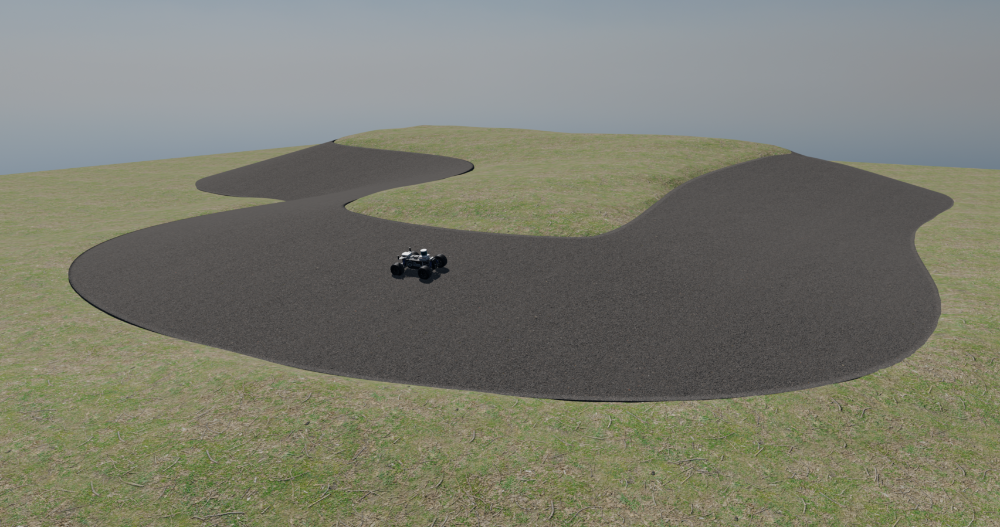
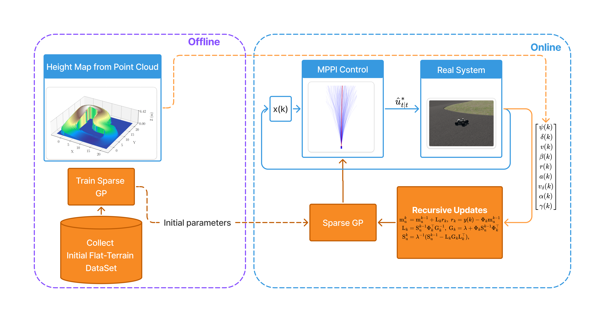
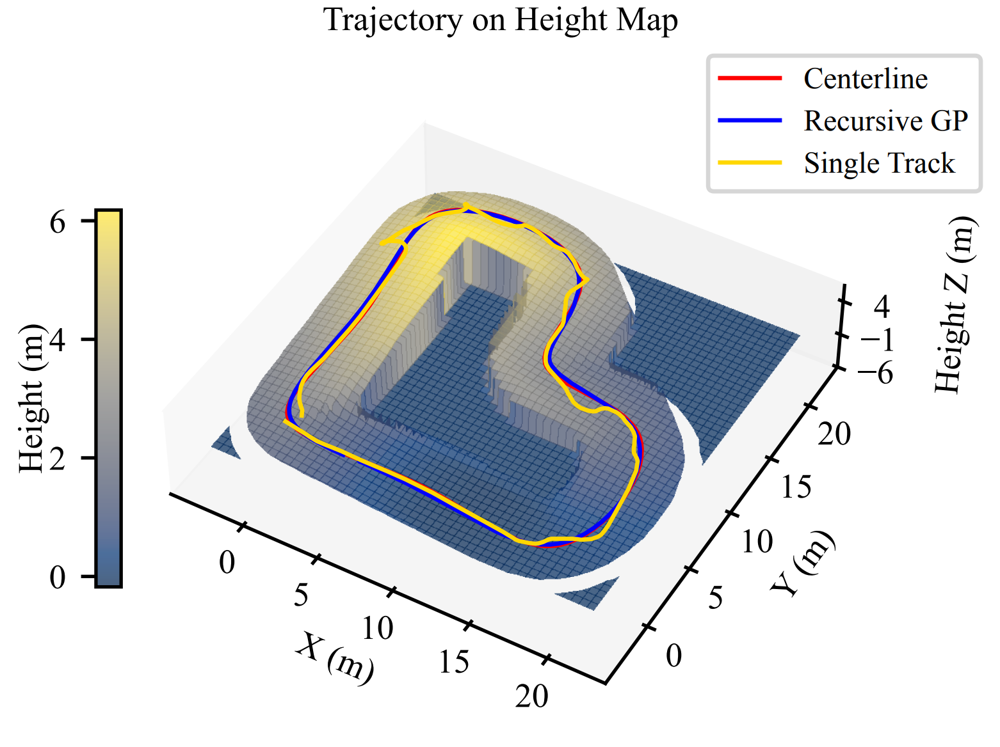

Non-Planar Racing
This paper proposes a nonplanar model predictive control (MPC) framework for autonomous vehicles operating on nonplanar terrain. To approximate complex vehicle dynamics in such environments, we develop a geometry-aware modeling approach that learns a residual Gaussian Process (GP). By utilizing a recursive sparse GP, the framework enables real-time adaptation to varying terrain geometry. The effectiveness of the learned model is demonstrated in a reference-tracking task using a Model Predictive Path Integral (MPPI) controller. Validation within a custom Isaac Sim environment confirms the framework’s capability to maintain high tracking accuracy on challenging 3D surfaces.

System Structure
The control framework combines a nominal single-track vehicle model with a sparse GP residual that is learned online to capture time-varying surface geometry. The learned dynamics model is embedded in a model predictive control formulation, and MPPI is used to solve the resulting nonlinear optimal control problem.

Results
We validate the performance of the proposed control framework in a custom Isaac Sim environment on a nonplanar track. The trajectory plot below shows the vehicle’s path using the recursive GP, the regular MPC, and the reference centerline.

Citation
@inproceedings{amine2026nonplanar,
title={Nonplanar Model Predictive Control for Autonomous Vehicles with Recursive Sparse Gaussian Process Dynamics},
author={Amine, Ahmad and Puri, Kabir Ram and Le, Viet-Anh and Mangharam, Rahul},
booktitle={2026 IEEE Intelligent Vehicles Symposium (IV)},
year={2026},
organization={IEEE}
}
Contributors
Ahmad Amine, Kabir Puri, Viet-Anh Le, Rahul Mangharam